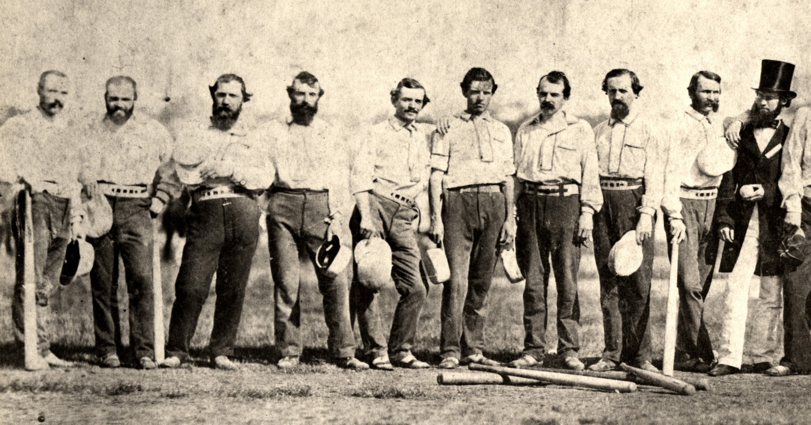

Baseball originated from various bat and ball games that were all regional variants of each other.
Stoolball and tut-ball were among the most recent antecedents of the game.
These games were brought to the United States and became very popular during the 19th century.

The New York Knickerbockers, one of the earliest organized baseball teams.
Modernization and Growth:
The New York Knickerbockers, formed in 1845, were one of the first organized baseball teams.
The game gained popularity throughout the 19th century, with the rules evolving gradually.
The formation of professional baseball leagues, such as the National League in 1876, contributed to its growth.
Integration and Expansion:
In 1947, Jackie Robinson broke the color barrier, becoming the first African American player in Major League Baseball and paving the way for integration.
Expansion of teams and the advent of television broadcasting further popularized the sport.
Baseball became an integral part of American culture, known as "America's Pastime."
Milestones
1869: The Cincinnati Red Stockings become the first professional baseball team, formed in 1869
1903: Major League Baseball is formed in 1903. The World Series is inaugurated the same year, becoming the premier championship series in baseball.
1947: Jackie Robinson breaks the color barrier, becoming the first African American player in Major League Baseball.
2006: The World Baseball Classic, an international baseball tournament, makes its debut, showcasing baseball's global reach and popularity of the game.
Rules of the Game
Baseball is played between two teams, each consisting of nine players. The objective is to score more runs than the opposing team.
Statistics
Explore key statistics from baseball games.
Batting Statistics
Batting Statistics
Stat
Description
Batting Average (BA)
The average number of hits per at-bat.
On-base Percentage (OBP)
The percentage of times a batter reaches base, including hits, walks, and hit by pitches.
Slugging Percentage (SLG)
The measure of the power of a hitter, calculated as total bases divided by at-bats.
Home Runs (HR)
The number of home runs hit by the player.
Runs Batted In (RBI)
The number of runs batted in by the player.
Pitching Statistics
Pitching Statistics
Stat
Description
Earned Run Average (ERA)
The average number of earned runs allowed per nine innings pitched.
Strikeouts per 9 Innings (K/9)
The average number of strikeouts per nine innings pitched.
Walks per 9 Innings (BB/9)
The average number of walks allowed per nine innings pitched.
Hits per 9 Innings (H/9)
The average number of hits allowed per nine innings pitched.
Wins (W)
The number of games won by the pitcher.
Fielding Statistics
Fielding Statistics
Stat
Description
Fielding Percentage
The percentage of successful fielding attempts.
Assists
The number of times the player assists in recording an out.
Putouts
The number of times the player records an out without an assist.
Errors
The number of errors committed by the player.
Double Plays Turned
The number of double plays initiated by the player.
Visualizations
Overall, these statistics provide insights into player performance and team dynamics.
Greatest Plays
"The Catch" by Willie Mays
Willie Mays' incredible over-the-shoulder catch in Game 1 of the 1954 World Series.
Derek Jeter Makes "The Flip"
Derek Jeter flips an amazing play to get out Jason Giambi during the 2001 ALDS.
Babe Ruth's Called Shot
In Game 3 of the 1932 World Series against the Chicago Cubs, New York Yankee Babe Ruth allegedly called his shot.
Hank Aaron Hits Home Run 715
Hank Aaron hits his 715th home run, breaking baseball's home run record. This was a seminal moment in baseball history, as well as American history, perhaps best captured by Vin Scully: "A black man is receiving a standing ovation in the Deep South."